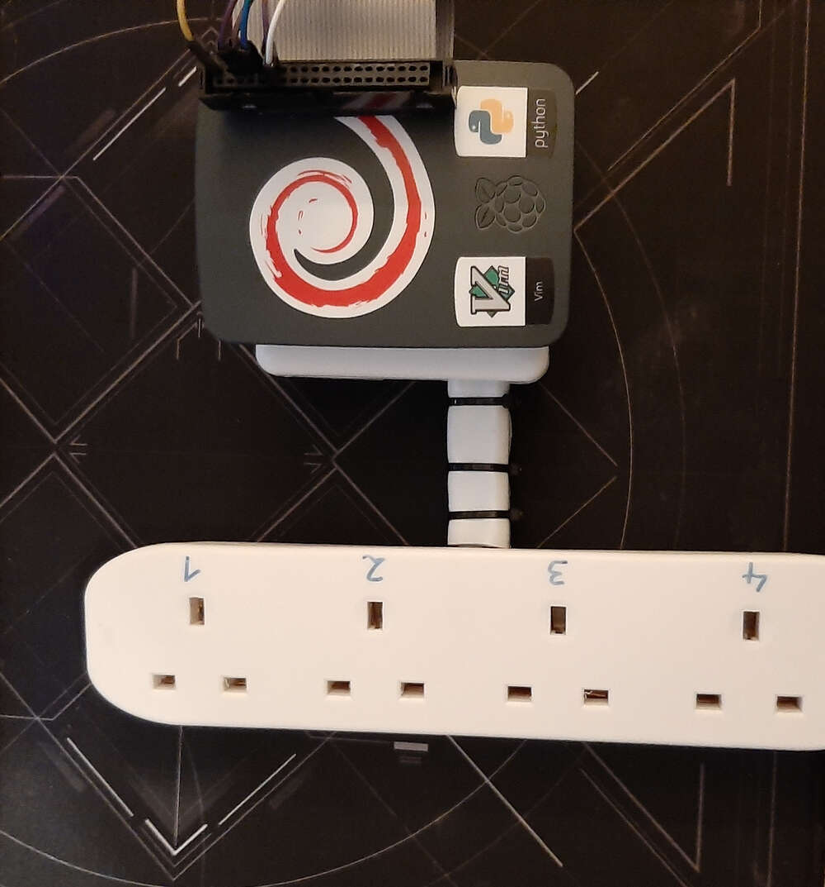
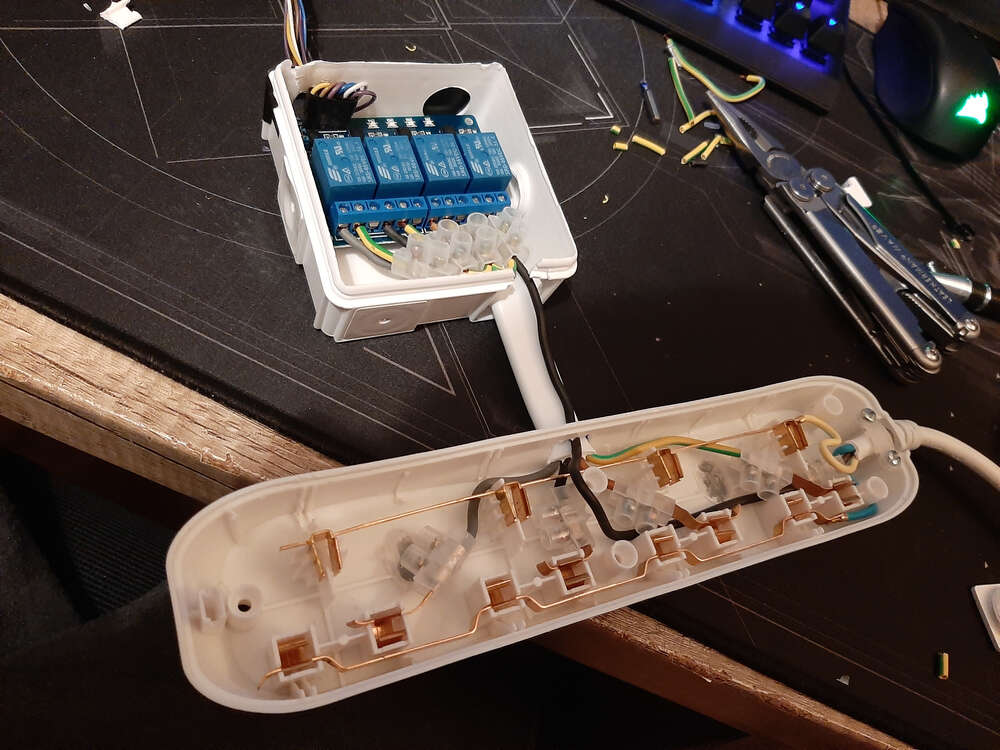

Web interface for controlling Christmas lights from anywhere
Idea
The idea was to control the Christmas lights from anywhere. I wanted to be able to turn them on when I’m coming home and don’t waste electricity when I’m away.
Wiring
The physical setup used for this project was four relies controlled with Raspberry Pi computer 

The wiring allowed to control 250V electrical current with 5V from RasbperryPi.
Server
The switches used for the lights couldn’t control the brightness of the lights, so I decided it’ll be best to just turn all of them at once. I used two very simple scripts for that.
All sockets on:
import RPi.GPIO as GPIO # the library to manage Rasbperry Pi pins
import time
# pins setup
GPIO.setmode(GPIO.BCM)
GPIO.setwarnings(False)
pins = [18,17,15,14]
GPIO.setup(pins, GPIO.OUT)
for pin in pins:
GPIO.output(pin, GPIO.LOW)
All sockets off:
# same as previous script
# only the for loop is different:
for pin in pins:
GPIO.output(pin, GPIO.HIGH)
GPIO.cleanup();
Then the scripts were called with GET requests from the website. Here’s the source code of the simple server handling the requests:
const express = require('express');
const {spawn} = require('child_process');
const app = express();
const path = require('path');
const port = 80;
const fs = require('fs');
var dir = path.join(__dirname, 'public');
app.use(express.static(dir));
app.get('/notARealPath', (req, res) => {
res.writeHead(200, { 'content-type': 'text/html' });
fs.createReadStream('index.html').pipe(res); // serving simple page with a on / off buttons
});
app.get('/allOn', (req, res) => {
const scriptPath = 'allOn.py'
const process = spawn('python', [scriptPath])
res.sendStatus(200);
process.stdout.on('data', (myData) => {
// ...
})
process.stderr.on('data', (myErr) => {
// ...
})
});
app.get('/allOff', (req, res) => {
const scriptPath = 'allOff.py'
const process = spawn('python', [scriptPath])
res.sendStatus(200);
process.stdout.on('data', (myData) => {
// ...
})
process.stderr.on('data', (myErr) => {
// ...
})
});
app.listen(port, () => console.log(`App listening on port: ${port}`))
Outside access
The main idea for this project was to control the lights from the outside - e.g. to turn them on only when arriving home. The Raspberry Pi used for this project was connected to a local network behind NAT. Without going into too much detail, the usual solution, port forwarding on the router, wasn’t possible in this case and I needed to get outside access to the Pi by other means.
The solution was to set up an outside server that relied all the HTTP requests to the Raspberry Pi. To do that I used a reverse SSH connection that basically forwarded the local website to the remote server port 8080:
autossh -NR 8080:localhost:80 -i <remote server SSH key> user@<remote server IP>
Final note
It would be better to use POST requests, but GET requests worked fine for this simple project.
The page had no security other than long paths for the requests, but even if someone guessed the paths used in the actual server, this is basically over-engineered light switch https://www.youtube.com/watch?v=onZ4KMM94yI